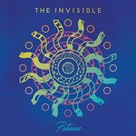
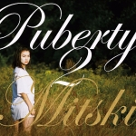

Quick Takes (June 2016)
If you would've asked Carl and I that we'd still be writing this feature a few months ago, we would've been surprised. But we just can't help ourselves, seeing as this year has been exceptionally rich in terms of album releases. So how did we fare with our monthly "leftovers" this time around? Well, Carl is effusively championing Mourn's second effort, as he did with other rising female singer-songwriters like Margaret Glaspy and Mitski. I was personally at awe with Huerco S.'s evocatively ambient soundscapes, and when I wasn't getting lost (meditating?) with it I fully let my defenses down with Nails' ferocious powerviolence.
What were your favorite albums during the month of June? Anything we didn't get to review on our site that we should've? You can always reach us on facebook, or on our official twitter page. - Juan
...
 Amber Arcades
Amber Arcades
Fading Lines
(Heavenly)
It’s hard not to root for Annelotte de Graaf, better known as Amber Arcades, a Dutch composer who once had a dream of releasing an album while working for Holland’s immigration center. Long story short: she managed to catch the attention of producer Ben Greenberg, and label Heavenly Recordings, to release her debut effort Fading Lines, a sturdily melodic effort that distills sugar-coated vocals and retro-futurist elements into a straightforward psych pop record. With a tuneful ear reminiscent of Bradford Cox, de Graaf likes to simplify things with uncomplicated song structures that emphasize steady rhythms instated of glazing them with loaded synth textures. There’s always room to experiment, sure, and she contrasts these diverse styles and meshes them together in a very natural and instinctual way. Fading Lines does leave much to be desired in its implementation, though, but there are multiple hints here that suggest that this is only the beginning for de Graaf. [7/10] Juan Edgardo Rodríguez
 Band of Horses
Band of Horses
Why Are You OK
(Interscope)
Band of Horses are long-overdue for a creative reinvention, and thankfully their latest, Why Are You OK, admirably redeems a band that was this close to getting written off following a string of disappointing engagements. It’s not that their last two efforts, Mirage Rock and Infinite Arms, were failures, but it did diminish their reverb-drenched pop smarts with the kind of by-the-numbers American indie rock that was too appeasing for its own good. During this time it seemed as if the Seattle outfit were aiming for an America-meets-My Morning Jacket vibe, executing a sleeker kind of soft rock that defied their lushly-layered anthemic songs. It’s quite apparent that the band has been struggling to retain their creative moxie, and though Why Are You OK attempts to make amends, it also does so by making some questionable choices. Songs like Hag and Dull Times / The Moon are simply gorgeous, putting forth a pensive approach that doesn’t stray too much from producer Jason Lytle’s (of Grandaddy) existential mid-tempo ballads. And the lyrical themes in the album about living a quiet domestic life are aptly mature, but also a tad empty and lack much insight, literal to the point that you’d assume main songwriter Ben Bridwell was peering through a window during sessions to write about anything he could find. Band of Horses don't exactly wander too far off path even if they at least contemplate the idea of taking any diverging paths. And you know what? At this point in their career it's an OK thing to do. [6/10] Juan Edgardo Rodríguez
 Huerco S.
Huerco S.
For Those of You Who Have Never (And Also Those Who Have)
(Proibito Records)
If you listen to Huerco S.’s compositions long enough, you begin to unravel a sorting of meticulously engineered soundscapes that seem to hold no apparent purpose. There’s no theme attached to his latest, For Those of You Who Have Never (And Also Those Who Have), or a connective thread to really pinpoint; there’s nothing tangible to grasp, really. But perhaps that’s the point that he wants to convey - the Kansas City producer writes delicate snippets of sound that are deceptively fragile, as if he’s trying to develop a vocabulary of his own. These are songs that are as intimate as they are frolicsome in design, composed of elongated interludes that sound like they could’ve been made in some recording studio in Cologne during the late seventies. It’s also peculiarly atmospheric, never tense or hurried, as if Huerco wishes to intrude during those quiet moments of deep contemplation that consume us. Whereas Colonial Patterns hinted at an artist who maybe would’ve liked to get listeners to dance, Those of You wants to take our minds to a more serene place. It’s mesmerizing background music that doesn’t pass judgment if you let it take a secondary role in your daily life. [8/10] Juan Edgardo Rodríguez
The Invisible
Patience
(Ninja Tune)
Four years on from The Invisible’s darkly excellent 2nd LP Rispah, Patience boasts a much more glosssy, gleaming sheen to their downtempo take on pop music, but that’s not to say the sound hasn’t lost its complexity. The songs float by as a cohesive unit, with quietly fashionable grooves kept on an unwavering tether. Beats break and skitter in the undertow of the album’s songs, and the result is 48 minutes of original, expertly crafted and convoluted pop. Dave Okumu has not been frugal in recruiting collaborators to work with him with this record, employing the expertise of Jessie Ware, Anna Calvi and Connan Mockasin amongst others, and the effects are generally positive throughout. The Invisible have developed a knack of making a busy soundscape seem easy and uncluttered, and they certainly achieve that again here. Patience is a record that never really takes off, but is a perfectly polished take on their thoroughly original sound. [7/10] Carl Purvis
The Kills
Ash & Ice
(Domino)
Not a great deal has changed with The Kills since their arrival at the turn of the century. Alison Mosshart and Jamie Hince are still looking every bit as stylish as their ice-cool, chugging riffs sounded on No Wow, and the nucleus of their sound still consists of those riffs charged over sultry, pre-programmed rhythms. Mosshart’s voice is still laced with that intensely provocative attitude, but after a five year hiatus, there are tentative segues into unchartered territories. The bare blues leads the way, but there’s a calculated vulnerability present in the likes of Echo Home, and a lugubrious overtone shrouding That Love. A finger injury that has caused complications for Hince has forced him to give less prominence to the slashing style that has typified his previous work with The Kills, and the new-found delicacy in their music may well be a by-product of that. At 50 minutes, there is the overriding feeling that the album outstays its welcome, with the blueprint lacking the dynamism for it to maintain its focus. [6/10] Carl Purvis
 Let's Eat Grandma
Let's Eat Grandma
I, Gemini
(Transgressive Records)
When considered just how unusual, inventive and intoxicating Let’s Eat Grandma’s debut LP is, it’s mind-blowing that Jenny Hollingworth and Rosa Walton are both just seventeen. Their pop music formula is stratospheres away from the norm, with songs regularly clocking in at over five minutes long, taking hallucinatory scenic routes around the landscape and expanding into startlingly original beings. The Norwich teens play all of the instruments heard on the record – and there are an awful lot of them – themselves, and the result is an incredibly expansive sound, often morphing and evolving from the heart of a single song and unraveling into outstanding episodes of artistry. One thing that is consistent throughout (other than the quality of the record) is the intertwining vocals of the two, with one hazy voice being sliced and scored by a babyish delivery that adds to the alarming levels of originality. The more you listen to this record, the more it impresses you, even if their name is downright awful. [8/10] Carl Purvis
 Margaret Glaspy
Margaret Glaspy
Emotions & Math
(ATO Records)
Margaret Glaspy’s debut LP is a perfect marriage between a voice and a guitar. It’s a relationship that is the ideal foil the Brooklyn singer/songwriter to self-dissect, but Emotions and Math is much more than a vehicle for Glaspy to analyse her own yearnings and apprehensions. Her grungy riffs are compact, snarling and punching with a great, off-kilter melodic sense, and her ability to switch between impartial self-assessment and astute narratives maintains the album’s compelling nature. Emotions and Math is, musically, generally a cordial affair, with the aforementioned grungy guitars warm and snug as opposed to oppressive and hostile. Glaspy’s voice itself is eccentric and susceptible to emotional metamorphosis, and some of the album’s strongest moments are when her voice is abrasive in its frustration or contrition: for example the first words spat from the chorus of You and I, or the frantic bursts of urgency amongst the affable stream of the title track. Sometimes, the formula for good guitar music is a simple one. [7/10] Carl Purvis
 Minor Victories
Minor Victories
Minor Victories
(Fat Possum)
There’s a tricky chemistry at play when members of reputable groups band together to form an entirely new project. It’s almost expected for so-called “supergroups” to flourish only by affiliation. But how do you even react when the music at hand just sounds like a one-off project to begin with, as it is with Minor Victories, a band featuring members of Editors, Mogwai, and Slowdive that can’t seem to find its footing even if their heart is in the right place. As soon as you hear these names you can already imagine a very specific aesthetic, which can work to their favor, but it’s particularly troublesome when listening to such project delivers pretty much what you’d expect without listening to a single note. Minor Victories predictably commingles lengthy passages and oodles of noise with a gothic insouciance, occasionally touching on slight shoegaze elements to deliver a coherently attractive voyage that tends to linger in its perpetual gloom. It occasionally works - Cogs reimagines My Bloody Valentine as performed with more of a pop flair with striking effect, while James Graham of The Twilight Sad brings a necessary verve to Scattered Ashes (Songs for Richard). But despite its moments of lucid release, Minor Victories mostly likes to loom in the shadows with hardly any form at all. [6/10] Juan Edgardo Rodríguez
Mitski
Puberty 2
(Dead Oceans)
With Mitski’s 4th LP, her willingness to tackle discordant themes, and the dynamic nature in which she does it, secures her position as one of the more compelling artists in the indie rock spectrum. Puberty 2 is intensely challenging, with Mitski juxtaposing power with daunting vulnerability, and applying validation and vitality to every sentiment she lays bare through her music. The frankness of the record allows it to make transitions from wild, frantic moments such as My Body’s Made of Crushed Little Stars to gorgeously tender ones such as Thursday Girl appear completely seamless. The fact that such a range of differing styles appear throughout the record show that Mitski has refined one of the more charismatic styles in her class, with perhaps only Annie Clark anything like a contemporary. Mitski’s boldness is hugely impressive, and couple that with the fact the record is so expertly mixed and edited, she has produced one of the year’s more complete LPs. [8/10] Carl Purvis
Mourn
Ha, Ha, He.
(Captured Tracks)
In December, Mourn took to social media to speak out against their Spanish label, Sones, accusing them of holding their second LP “hostage.” Six months on, it can be looked back on as a brave move that ultimately paid off. On their 2014 self-titled debut, Mourn showed that they had put together a post-rock formula that didn’t outstay its welcome and packed a hard-hitting, provoking punch. With Ha, Ha, He., they have refined that formula further, sharpening up the edges of their sound and ultimately delivering a superb record. There are areas of the album where the Catalonian teens show an astute pop sensibility, with the likes of Brother, Brother and Gertrudis Get Through This appearing incessantly catchy whilst maintaining the razor sharp, undercooked edge that puts them head and shoulders above a lot of guitar bands active today. Their tracks are short and their dose is concentrated, but their melodic flair and incisive, heavy sting are strong. [9/10 – Believe The Hype] Carl Purvis
Nails
You Will Never Be One of Us
(Nuclear Blast Records)
There’s only one moment of respite throughout Nails’ punishing twenty minutes of power violence, You Will Never Be One of Us. A faint slab of distortion assumes its position as the Oxnard, California foursome ominously declare the title track, as if daring their listeners to come join them even though very few are truly welcome into their roaring, inflamed discharge. A few seconds later, the album truly storms out with a series of face-melting riffs and sonorous double pedal hits. It’s clear that Nails aren’t in it to change things. However, they’ve considerably upped their songwriting skills with a fervent desire that almost contradicts their bleak view on the world at large. Instead of just powering through a series of fully-armed one to two minute hardcore rants as they usually do, the band do pace themselves with an eight minute closer that somewhat spatters their otherwise unmitigated raw power. All in all, this is another first-rate effort from one of the most deviant voices in hardcore. [8/10] Juan Edgardo Rodríguez
 Steve Gunn
Steve Gunn
Eyes on the Lines
(Matador)
It’s been a stellar year for male singer-songwriters who like to play with their guitars - while William Tyler brought a historical perspective to his instrumental compositions on his latest filled with quiet wisdom, Steve Gunn similarly fiddles earthy compositions with more of a gruff, masculine demeanor. The Brooklyn-based guitarist is a notable veteran who’s brought a sound approach to a lost art for years, though this is the first time where it feels like we’re fully paying attention to Gunn, the man, and not Gunn the technically proficient performer. It helps that he has something to say on Eyes on the Lines - the album has its eyes set on the road ahead, taking a more observational bent to our surroundings and how we react to them, all while advising us to soak up whatever comes our way. It’s not always the most memorable listen, though through its free-flowing divagations we finally begin to feel more empathy for an artist who’s too perceptive to hide behind his taut guitar accents. [7/10] Juan Edgardo Rodríguez
6 July, 2016 - 04:59 — No Ripcord Staff